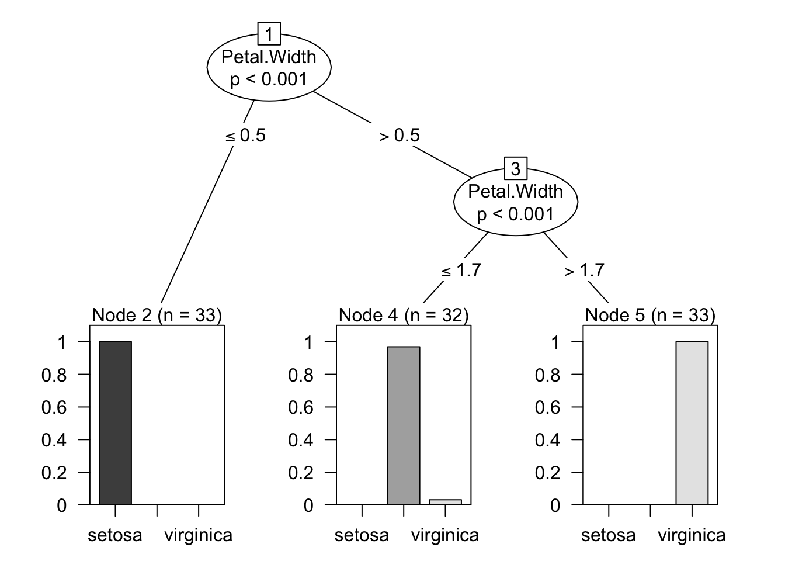
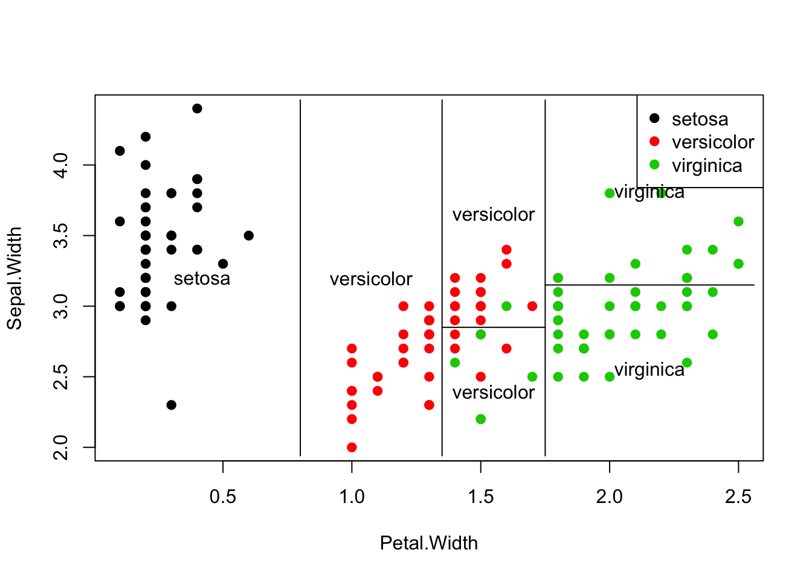
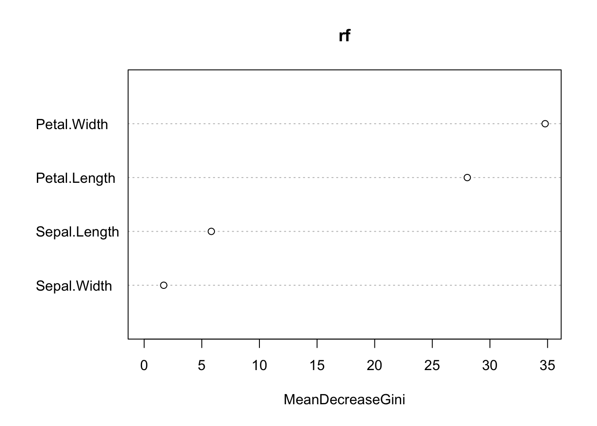
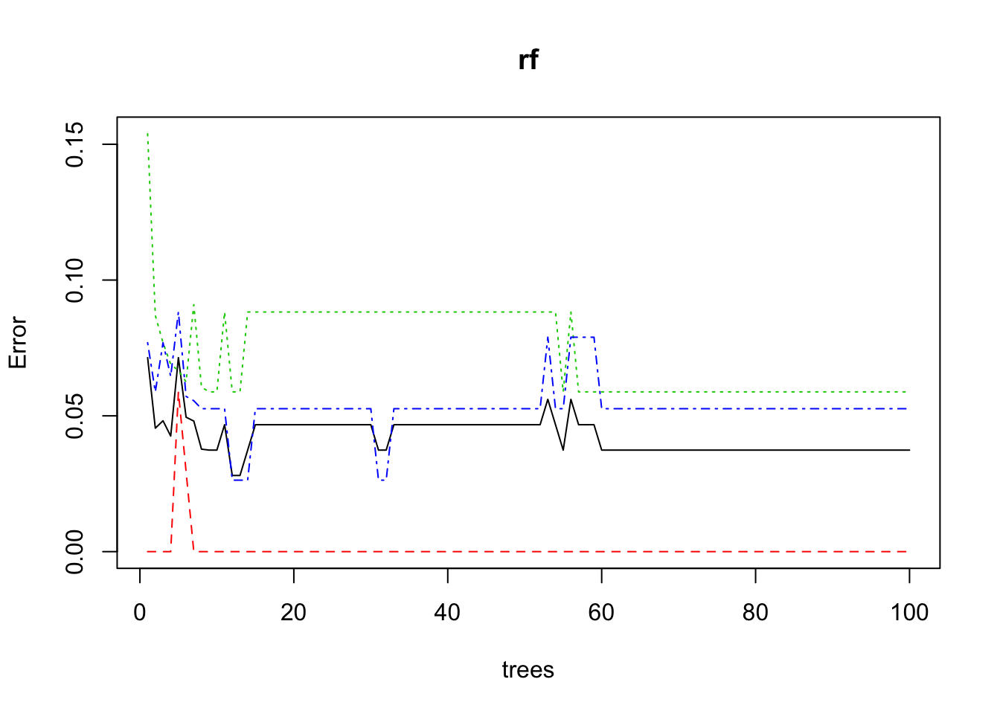
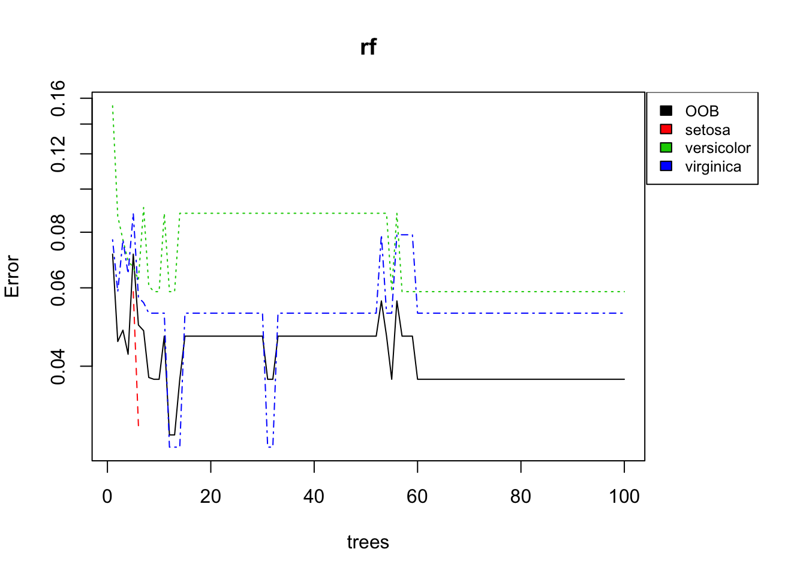
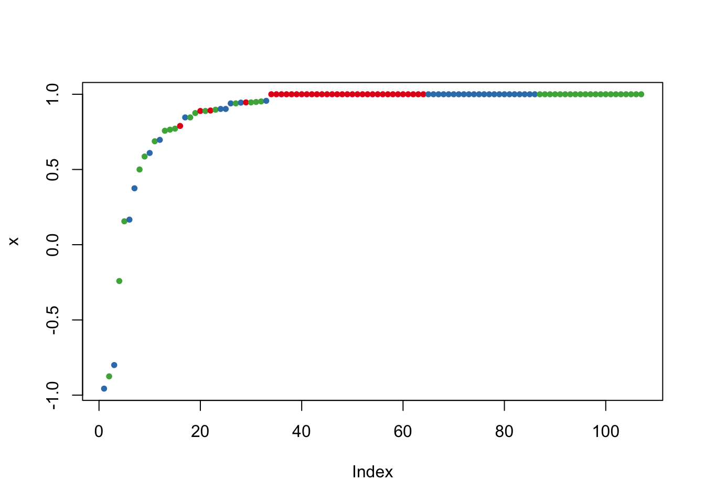

party, et la fonction ctree(variable à expliquer ~ variable 1 + variable 2)print et plotind <- sample(2, nrow(iris), replace=TRUE, prob=c(0.7, 0.3))
trainData <- iris[ind==1,]
testData <- iris[ind==2,]
library(party)
myFormula <- Species ~ Sepal.Length + Sepal.Width + Petal.Length + Petal.Width
iris_ctree <- ctree(myFormula, data=trainData)plot(iris_ctree)
print(iris_ctree)##
## Conditional inference tree with 4 terminal nodes
##
## Response: Species
## Inputs: Sepal.Length, Sepal.Width, Petal.Length, Petal.Width
## Number of observations: 107
##
## 1) Petal.Length <= 1.9; criterion = 1, statistic = 99.688
## 2)* weights = 35
## 1) Petal.Length > 1.9
## 3) Petal.Width <= 1.7; criterion = 1, statistic = 47.627
## 4) Petal.Length <= 4.6; criterion = 0.994, statistic = 9.937
## 5)* weights = 27
## 4) Petal.Length > 4.6
## 6)* weights = 10
## 3) Petal.Width > 1.7
## 7)* weights = 35table(predict(iris_ctree), trainData$Species)##
## setosa versicolor virginica
## setosa 35 0 0
## versicolor 0 33 4
## virginica 0 1 34Calculer les taux de faux positif, faux négatifs, taux d’erreur
testPred <- predict(iris_ctree, newdata = testData)
table(testPred, testData$Species)##
## testPred setosa versicolor virginica
## setosa 15 0 0
## versicolor 0 16 1
## virginica 0 0 11Calculer les taux de faux positif, faux négatifs, taux d’erreur Pour aller plus loin : créer une boucle pour calculer un taux moyen d’erreur Autre pacakge rpart pour construire un arbre de décision
library(tree)
tr <- tree(Species ~ ., iris)
tr <- tree(Species ~ Sepal.Width + Petal.Width, trainData)predict(tr, newdata = testData,type = "class") ## [1] setosa setosa setosa setosa setosa setosa
## [7] setosa setosa setosa setosa setosa setosa
## [13] setosa setosa setosa versicolor virginica versicolor
## [19] versicolor versicolor versicolor versicolor virginica versicolor
## [25] versicolor virginica versicolor versicolor versicolor versicolor
## [31] versicolor virginica virginica virginica virginica virginica
## [37] virginica virginica virginica virginica virginica virginica
## [43] virginica
## Levels: setosa versicolor virginicaplot(Sepal.Width ~ Petal.Width, iris, col = as.numeric(iris$Species), pch = 19); legend("topright", legend = levels(iris$Species), col = seq(levels(iris$Species)), pch = 19)
partition.tree(tr, label = "Species", add = TRUE)
Si on n’a pas fixé le seed() on voit que les échantillons d’apprentissage et de test sont choisis de façon aléatoire. La bagging permet de réaliser ces opérations automatiques. De plus, on peut aussi choisir les variables. Les deux randomisations ensemble, on obtient une forêt aléatoire.
library(randomForest)## randomForest 4.6-12## Type rfNews() to see new features/changes/bug fixes.rf <- randomForest(Species ~ ., data=trainData, ntree=100, proximity=TRUE)table(predict(rf), trainData$Species)##
## setosa versicolor virginica
## setosa 35 0 0
## versicolor 0 32 2
## virginica 0 2 36print(rf)##
## Call:
## randomForest(formula = Species ~ ., data = trainData, ntree = 100, proximity = TRUE)
## Type of random forest: classification
## Number of trees: 100
## No. of variables tried at each split: 2
##
## OOB estimate of error rate: 3.74%
## Confusion matrix:
## setosa versicolor virginica class.error
## setosa 35 0 0 0.00000000
## versicolor 0 32 2 0.05882353
## virginica 0 2 36 0.05263158attributes(rf)## $names
## [1] "call" "type" "predicted"
## [4] "err.rate" "confusion" "votes"
## [7] "oob.times" "classes" "importance"
## [10] "importanceSD" "localImportance" "proximity"
## [13] "ntree" "mtry" "forest"
## [16] "y" "test" "inbag"
## [19] "terms"
##
## $class
## [1] "randomForest.formula" "randomForest"importance(rf)## MeanDecreaseGini
## Sepal.Length 5.826681
## Sepal.Width 1.696178
## Petal.Length 28.034735
## Petal.Width 34.790163varImpPlot(rf)
plot(rf)
layout(matrix(c(1,2),nrow=1),
width=c(4,1))
par(mar=c(5,4,4,0)) #No margin on the right side
plot(rf, log="y")## Warning in xy.coords(x, y, xlabel, ylabel, log = log): 98 y values <= 0
## omitted from logarithmic plotpar(mar=c(5,0,4,2)) #No margin on the left side
plot(c(0,1),type="n", axes=F, xlab="", ylab="")
legend("top", colnames(rf$err.rate),col=1:4,cex=0.8,fill=1:4)
irisPred <- predict(rf, newdata=testData)
table(irisPred, testData$Species)##
## irisPred setosa versicolor virginica
## setosa 15 0 0
## versicolor 0 15 1
## virginica 0 1 11plot(margin(rf, testData$Species))
Copyright © 2016 Blog de Kezhan Shi